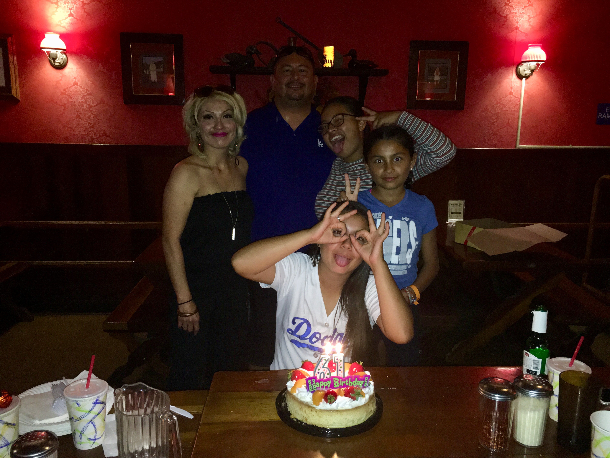

I am well skilled in different parts of elements. I am really good at coding, work with technology, leadership and working with others. I have been in the ATM program for 3 years and have advanced in many ways. I know a lot of things that involve technology. I work well with others especially on work, projects, or just naturally getting along with them. Many people can not work with others because of a grudge they have on them. Although, I am different. I can put everything aside and work with them to get my work done. I am currently in a female leadership academy. My skills as a leader have improved and my perspective and ways have also grown. Those are just a bit of my skills. :))
I enjoy doing lots of activities. A few of them are baking, cooking, babysitting, traveling, and photography. Also, not so long ago i played soccer so I still enjoy to play it for fun at times. I really love and get into anything that involves the kitchen. I enjoy babysitting children because it makes me happy and loved. Traveling is something that I have always loved. I would like to go out more and visit places i have never been to. Although, I am not the best at photography I still enjoy doing it. When I take pictures of nature or other people’s work it makes me feel a connection between it. The feeling is good and taking pictures calms me down. I am interested in many things. I am interested in math, computers, business and leadership groups.
I am the second oldest. I have 3 sisters. One older and two younger. My dad works with technology and business. He has worked witha few tv stations. He's currently persuing one of his many talents. My mom works and also helps to take care of us when we go over to her house. I also have one nephew. He's 4 months and his name is salem. I like to spend time with my family and stay invloved. it brings me joy and makes me feel at home when i'm around family.
